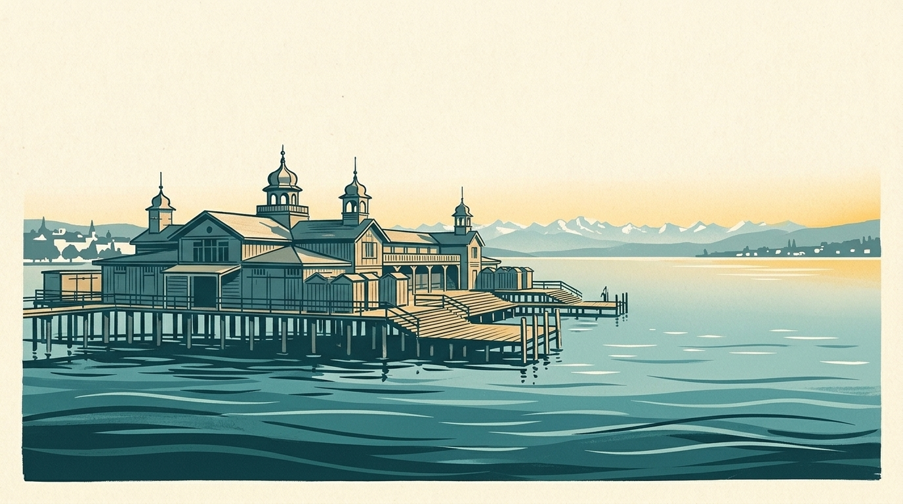

In short
My Lake follows 20 beaches on Lake Zurich, with the water temperature 70 cm below the surface where it is calculated. Here is the list, then useful places around the water.

Lake Zurich covers about 88.7 km², is up to 136 m deep and lies at 406 m above sea level.
The 20 beaches followed on Lake Zurich
In brackets: the morning temperature on 14 November 2026, 70 cm below the surface (Alplakes model).
- Zurich – Strandbad Mythenquai (14.0 °C)
- Zurich – Seebad Enge (14.0 °C)
- Zurich – Strandbad Wollishofen (13.9 °C)
- Zurich – Seebad Utoquai (14.0 °C)
- Zurich – Strandbad Tiefenbrunnen (14.0 °C)
- Kilchberg (14.1 °C)
- Rüschlikon (14.0 °C)
- Thalwil (14.0 °C)
- Zollikon (14.0 °C)
- Küsnacht (14.0 °C)
- Erlenbach (14.0 °C)
- Oberrieden (14.0 °C)
- Feldmeilen (13.9 °C)
- Meilen (13.9 °C)
- Wädenswil – Rietliau (13.9 °C)
- Uetikon am See (13.8 °C)
- Richterswil (13.8 °C)
- Bäch (13.8 °C)
- Pfäffikon SZ (13.6 °C)
- Rapperswil (12.9 °C)
Entry, season and access
Prices and dates collected on 13 November 2026 from the sources below, for the 2026 season: check each baths’ website before you go.
- Seebad Utoquai: 2026 season from 11 April to 25 October, adult entry CHF 8 (12-entry card: CHF 80).
- Other lakeside baths in 2026, adult entry: Kilchberg CHF 6 (1 May to 20 September), Zollikon CHF 6 (1 May to 13 September), Oberrieden CHF 5 (10 May to 20 September), Richterswil CHF 5.
A drink or a meal by Lake Zurich
- Seebad Enge, Zurich: Mythenquai 9: kiosk with grill and bar, light lunches, grilled dishes in the evening; from 8pm the bath turns into a bar.
- Seebad Utoquai, Zurich: Historic wooden bath on the lake promenade with several sun terraces, kiosk restaurant and bar.
- Seerestaurant Badi Wollishofen, Zurich: Large terrace with a lake view, Swiss cooking.
- Seebadi Richterswil, Richterswil: Restaurant with a terrace in the lakeside baths, dogs welcome; open from 9am June to August.
- Löwen Meilen, Meilen: Inn of medieval origin, renovated in 2002: in summer, a terrace with direct lake access, fish and meat on the hot stone.
- Gasthof Hirschen am See, Meilen (Obermeilen): Terrace and lakeside garden right on the water.
- Restaurant Tracht, Rüschlikon: A house on the lake, with a terrace right on the water.
- Ristorante La Scala, Rapperswil: Italian restaurant right on Rapperswil harbour, with a large terrace overlooking it.
Renting on Lake Zurich
Each entry links to the operator’s own website when there is one. Hours and prices change: check with them.
- Saunabooten Hildi & Alice (Bootsvermietung Enge), Zurich, near Zurich – Strandbad Mythenquai: Two sauna boats at Mythenquai, rented in fixed 4-hour slots for 2 to 6 people, no licence needed (speed limited to 10 km/h), booked online. Prices vary by source: see the website.
- Saunaboot Leopoldd, Jona (Rapperswil-Jona), near Rapperswil: Sauna boat leaving from the KIBAG marina in Jona, up to six people, 3, 4, 6 or 9-hour slots from CHF 399, no licence needed, minimum age 18.
Saunas on Lake Zurich
- Sauna am See Tonttu, Seebad Enge, Zurich (September to May), near Zurich – Seebad Enge: In the historic Enge baths: two mixed saunas and one women’s cabin, a large open-air area with direct lake access, a café, no booking needed. Season mid-September to early May according to badi-info.ch.
- Seesauna Stäfa, Stäfa (October to April), near Uetikon am See: Seestrasse 2: Finnish sauna, organic sauna on Tuesdays, indoor sauna cube, direct lake access and a heated lounge; CHF 30 entry, no booking, mid-October to April according to third-party sources.
Also read
- Water temperature on Lake Zurich: where the figures come from
- Saunas on Lake Zurich: 4 places, from the city to Rapperswil
- Winter swimming in Zurich: lake beaches, today’s water and saunas to warm up
- Floating saunas and sauna boats in Switzerland: 6 places on four lakes
Lake Geneva’s water right now
Each beach’s water temperature is in the My Lake app, updated every three hours.